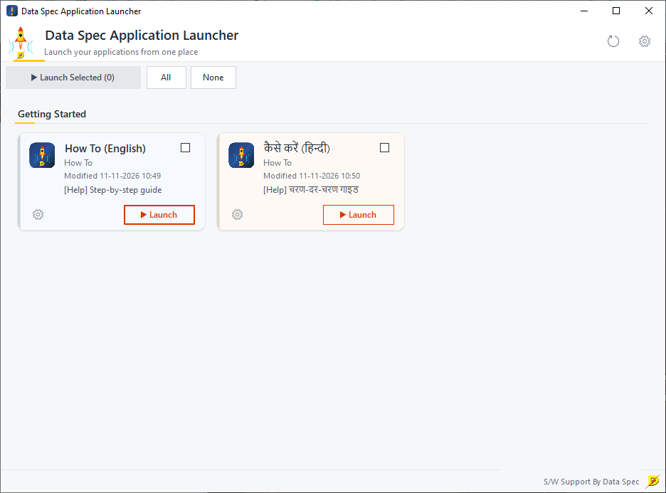
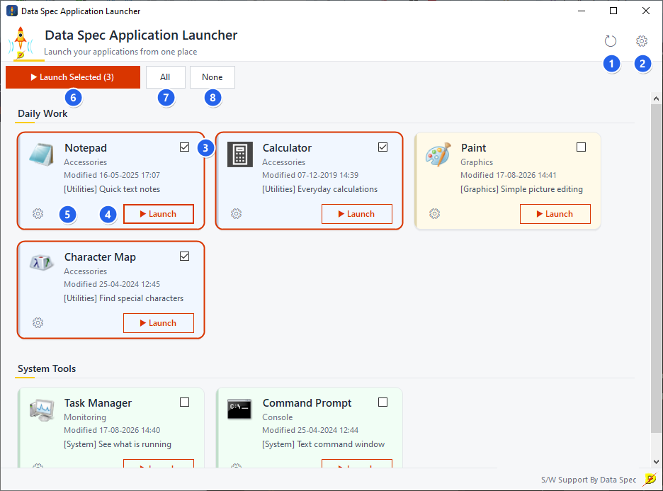
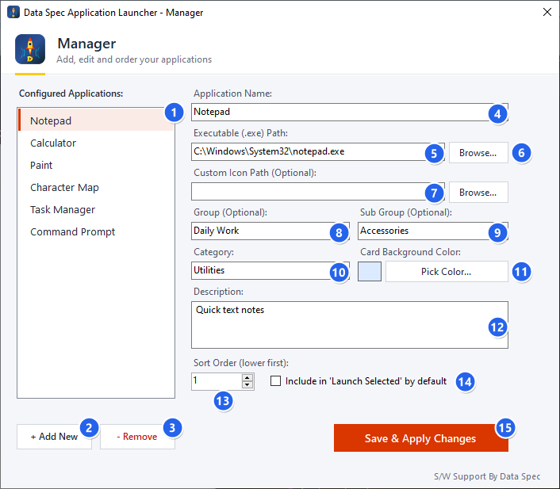
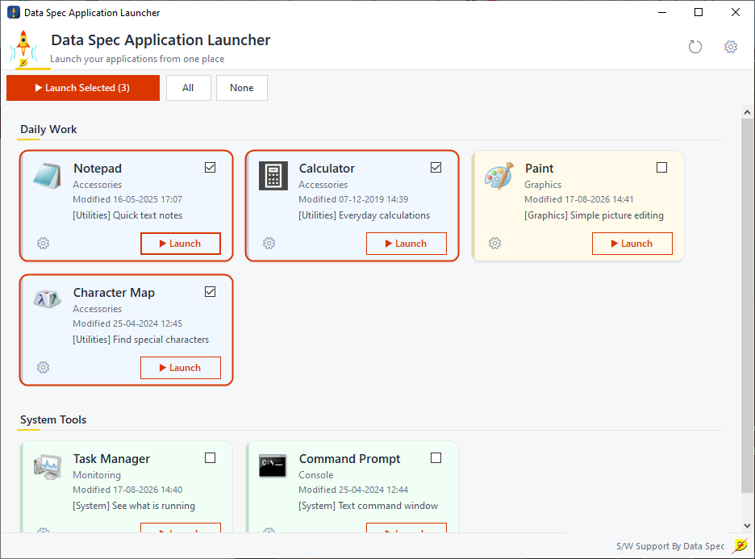
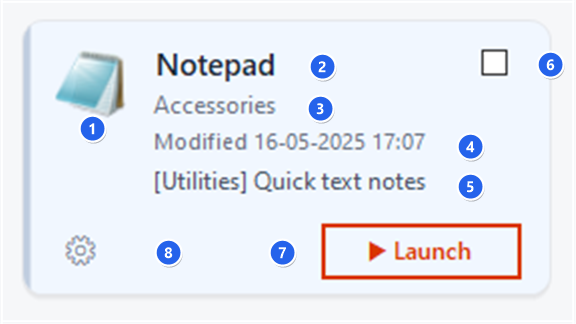

1. यह क्या करता है
dsAppLaunch आपके रोज़ उपयोग होने वाले प्रोग्राम को कार्डों की एक ग्रिड में दिखाता है। किसी प्रोग्राम को चालू करने के लिए उसके कार्ड पर ▶ Launch दबाएँ। कई कार्ड पर टिक लगाकर ▶ Launch Selected दबाएँ, तो वे सब एक साथ खुल जाते हैं — हर कार्य-दिवस की शुरुआत में खुलने वाले प्रोग्राम के लिए यह बहुत सुविधाजनक है।
इसके लिए किसी तकनीकी ज्ञान की ज़रूरत नहीं है। अगर आप फ़ोल्डर में से कोई फ़ाइल चुन सकते हैं, तो आप इसे सेट कर सकते हैं।
2. पहली बार शुरू करना
dsAppLaunch पहली बार खुलने पर Getting Started नाम का एक ग्रुप दिखाता है, जिसमें दो कार्ड होते हैं — यही मार्गदर्शिका अंग्रेज़ी और हिन्दी में। किसी भी कार्ड पर ▶ Launch दबाने से मार्गदर्शिका आपके वेब ब्राउज़र में खुल जाती है, जब चाहें तब।

3. मुख्य विंडो की जानकारी

- Reload (गोल तीर) — आपकी सूची दोबारा पढ़ता है और अस्थायी टिक हटा देता है।
- Manager (गियर) — वह विंडो खोलता है जहाँ आप प्रोग्राम जोड़ते और बदलते हैं।
- टिक बॉक्स — इस कार्ड को Launch Selected के लिए चुनता है। टिक वाले कार्ड पर नारंगी रेखा आ जाती है।
- Launch — सिर्फ़ यही प्रोग्राम चालू करता है।
- छोटा गियर — Manager को इसी प्रोग्राम पर चुनकर खोलता है।
- Launch Selected (n) — टिक किए हुए सभी कार्ड चालू करता है; n बताता है कि कितने टिक हैं। कम से कम एक टिक होने तक यह धूसर रहता है।
- All — सभी कार्ड पर टिक लगाता है।
- None — सभी टिक हटा देता है।
4. अपने प्रोग्राम जोड़ें
ऊपर दाईं ओर के गियर को दबाकर Manager खोलें।

प्रोग्राम जोड़ने के दो तरीके
- ड्रैग और ड्रॉप — Windows Explorer से कोई प्रोग्राम (
.exeफ़ाइल या शॉर्टकट) खींचकर सूची पर छोड़ दें। हर फ़ाइल के लिए एक नई एंट्री बन जाती है। आप किसी फ़ाइल को Executable या Custom Icon के बॉक्स पर भी छोड़ सकते हैं। - Add New — + Add New दबाएँ, नाम लिखें, Executable Path के पास Browse... दबाकर प्रोग्राम चुनें।
काम पूरा होने पर Save & Apply Changes दबाएँ। Manager बंद हो जाता है और आपके कार्ड मुख्य स्क्रीन पर दिखने लगते हैं। किसी प्रोग्राम को हटाने के लिए उसे सूची में चुनें और - Remove दबाएँ।
हर फ़ील्ड का काम
- Configured Applications — आपके जोड़े हुए सभी प्रोग्राम। बदलने के लिए किसी एक पर क्लिक करें।
- + Add New — एक खाली एंट्री बनाता है।
- - Remove — चुनी हुई एंट्री मिटा देता है।
- Application Name — कार्ड पर दिखने वाला नाम।
- Executable (.exe) Path — चालू होने वाला प्रोग्राम। कोई दस्तावेज़ या वेब-पेज फ़ाइल (जैसे
.pdfया.html) भी चलेगी — Windows उसे उसके सामान्य प्रोग्राम से खोल देता है। - Browse... — फ़ोल्डर में से प्रोग्राम ढूँढकर चुनें।
- Custom Icon Path (वैकल्पिक) — प्रोग्राम के अपने आइकन की जगह दिखाने के लिए कोई चित्र या आइकन।
- Group (वैकल्पिक) — एक ही ग्रुप वाले कार्ड एक शीर्षक के नीचे साथ-साथ आते हैं, जैसे Office या Accounts।
- Sub Group (वैकल्पिक) — कार्ड पर दिखने वाला दूसरा लेबल, जैसे वर्ष या शाखा।
- Category — Utilities जैसा छोटा लेबल, जो कार्ड पर कोष्ठक में दिखता है।
- Pick Color... — कार्ड को रंग से पहचानने योग्य बनाएँ (भाग 5 देखें)।
- Description — कार्ड पर दिखने वाला छोटा नोट।
- Sort Order (lower first) — ग्रुप के भीतर कार्ड की जगह। 1 पहले आता है, फिर 2, और इसी तरह।
- Include in ‘Launch Selected’ by default — जिन प्रोग्राम पर लॉन्चर खुलते ही हर बार टिक चाहिए, उनके लिए इसे चुनें।
- Save & Apply Changes — सब कुछ सेव करके मुख्य विंडो पर लौटता है।
नेटवर्क प्रोग्राम: अगर कोई प्रोग्राम साझा नेटवर्क ड्राइव पर है (पाथ \\ से शुरू होता है), तो वह हर उस कंप्यूटर पर चलेगा जो उसी ड्राइव तक पहुँच सकता है।
5. ग्रुप, क्रम और रंग
- ग्रुप। संबंधित प्रोग्राम को एक ही Group लिखें। वे एक शीर्षक के नीचे साथ दिखेंगे। जिन प्रोग्राम का ग्रुप खाली है, वे (Ungrouped) के नीचे आते हैं।
- क्रम। ग्रुप के भीतर कार्ड Sort Order के अनुसार लगते हैं — छोटी संख्या पहले। Launch Selected भी इसी क्रम में प्रोग्राम चालू करता है, इसलिए जो प्रोग्राम सबसे पहले खुलना चाहिए उसे नंबर 1 दें।
- रंग। कार्ड को रंग देने के लिए Pick Color... दबाएँ। रंग कार्ड के बाएँ किनारे पर पट्टी और हल्की छाया के रूप में दिखता है। सादे कार्ड के लिए इसे सफ़ेद रहने दें।
- रोज़ का सेट। जो प्रोग्राम आप हर सुबह खोलते हैं, उनके लिए Include in ‘Launch Selected’ by default चुनें। फिर ▶ Launch Selected पर एक क्लिक से वे सब खुल जाते हैं।
6. एक या कई प्रोग्राम खोलें
- एक प्रोग्राम: उसके कार्ड पर ▶ Launch दबाएँ। Windows द्वारा प्रोग्राम खोले जाने तक कार्ड थोड़ी देर Windows के प्रोग्राम खोलते समय कार्ड थोड़ी देर “starting” स्थिति दिखाता है।ldquo;startingWindows के प्रोग्राम खोलते समय कार्ड थोड़ी देर “starting” स्थिति दिखाता है।rdquo; स्थिति दिखाता है।
- कई प्रोग्राम: जिन कार्ड को चाहिए उनके ऊपर दाईं ओर के बॉक्स में टिक लगाएँ, फिर ▶ Launch Selected (n) दबाएँ। प्रोग्राम एक के बाद एक, लगभग एक-एक सेकंड के अंतर से, स्क्रीन पर दिखने वाले क्रम में खुलते हैं।

टिक केवल मौजूदा सत्र तक रहते हैं। Reload दबाने या Manager में सेव करने पर टिक वैसे हो जाते हैं जैसा आपने Include in ‘Launch Selected’ by default से तय किया है।
अगर कोई प्रोग्राम चालू नहीं हो पाता — जैसे फ़ाइल हटा दी गई हो या नेटवर्क ड्राइव जुड़ी न हो — तो अंत में एक ही संदेश आता है जिसमें सिर्फ़ वही प्रोग्राम गिने होते हैं। बाकी प्रोग्राम फिर भी खुल जाते हैं।
7. कार्ड पर क्या-क्या है

- आइकन — प्रोग्राम का अपना आइकन, या आपका चुना हुआ आइकन।
- नाम — Application Name।
- Sub Group — दूसरा लेबल।
- Modified — प्रोग्राम की फ़ाइल आख़िरी बार कब बदली गई। इस पर डबल-क्लिक करने से प्रोग्राम वाला फ़ोल्डर खुल जाता है।
- [Category] Description — आपके अपने नोट।
- टिक बॉक्स — Launch Selected के लिए चुनें।
- Launch — यह प्रोग्राम चालू करें।
- गियर — इस प्रोग्राम को Manager में बदलें।
नेटवर्क ड्राइव के प्रोग्राम के कार्ड तुरंत दिख जाते हैं; आइकन और तारीख़ कुछ पल बाद भर जाती है। अगर ड्राइव बंद है तो वह कार्ड सादा ही रहता है — बाकी लॉन्चर सामान्य रूप से चलता रहता है।
8. आपकी सूची कहाँ सेव होती है
आपके प्रोग्राम की सूची एक फ़ाइल में सेव होती है:
%AppData%\Data Spec\dsAppLaunch\apps.jsonफ़ोल्डर खोलने के लिए Windows + R दबाएँ, %AppData%\Data Spec\dsAppLaunch पेस्ट करें और Enter दबाएँ।
- बैकअप लेने या दूसरे कंप्यूटर पर ले जाने के लिए
apps.jsonकी कॉपी कर लें। - नए सिरे से शुरू करने के लिए (और पहली बार वाले मार्गदर्शिका कार्ड दोबारा देखने के लिए): लॉन्चर बंद करें,
apps.jsonमिटा दें और लॉन्चर फिर चालू करें। - dsAppLaunch को अपडेट या अनइंस्टॉल करने पर यह फ़ाइल नहीं हटती, इसलिए दोबारा इंस्टॉल करने पर भी आपकी सूची बनी रहती है।
9. कुछ गड़बड़ हो जाए तो
| समस्या | क्या करें |
|---|---|
| कार्ड कहता है कि प्रोग्राम नहीं मिला | फ़ाइल हटाई या दूसरी जगह रखी गई है, या नेटवर्क ड्राइव जुड़ी नहीं है। Manager खोलें, प्रोग्राम चुनें और Executable Path जाँचें। |
Manager नहीं खुलता और apps.json के बारे में संदेश आता है | सेटिंग फ़ाइल बिगड़ गई है, आमतौर पर हाथ से बदलाव करने के कारण। संदेश में बताया गया पाठ ठीक करें, या फ़ाइल मिटाकर अपने प्रोग्राम फिर से जोड़ें। |
| कार्ड पर आइकन या तारीख़ नहीं दिख रही | प्रोग्राम की फ़ाइल तक (अभी) पहुँच नहीं हो पा रही। कुछ सेकंड रुकें, या Reload दबाएँ। |
| मैंने लॉन्चर के बाहर कुछ बदला, पर वह दिख नहीं रहा | Reload दबाएँ। |
| मार्गदर्शिका वाले कार्ड नहीं खुलते | मार्गदर्शिका की फ़ाइलें प्रोग्राम के पास वाले howto फ़ोल्डर में रहती हैं। अगर वह फ़ोल्डर हटा या खिसका दिया गया है, तो dsAppLaunch दोबारा इंस्टॉल करें या दोनों कार्ड हटा दें। |